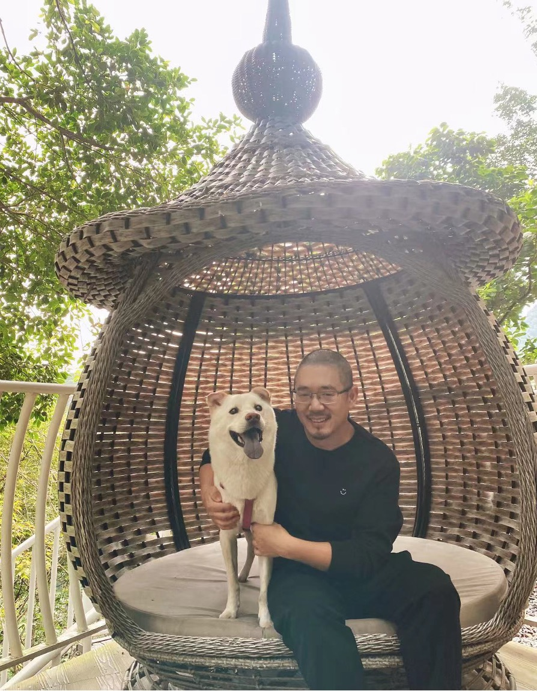

BIO | XING PAN
Xing PAN (Xingzimin PAN, 潘行紫旻) is a Chinese composer. His music
has been performed in the United States, Canada, Germany, Austria,
Norway, Sweden, France, Italy, Greece, Malta, South Africa, Hungary,
Slovenia, Romania, Croatia, Slovakia, Poland, New Zealand, Australia,
Singapore, Japan, South Korea, and China, and the venues include
Norway National Opera & Ballet House, Chicago Cultural Center,
Goldener Saal Wiener Musikvereins, Yong Siew Toh Concert Hall, China
National Centre for the Performing Arts, Taipei National Theater and
Concert Hall, etc. He is the recipient of awards from the
International Federation of Choral Music Composition Competition, the
American Prize, RED NOTE Composition Competition, Diane Loomer Award,
Musica Prospettiva Call for Scores, Leonardo Da Vinci International
Choral Composition Competition, the Flute New Music Consortium
Composition Contest, China National Arts Fund, and China-ASEAN Music
Week Composition Competition. His choral works are published by
several publishers including Schott Music.
As one of the most active Chinese choral composers, Pan's choral music focuses on conveying different harmonic images and subtle emotional experiences of humans. He has collaborated with Princeton Singers, Sydney Chamber Choir, at the Sun, Ontario Youth Choir, University of Toronto Women's Choir, Western University Chorale, University of Saskatchewan Greystone Singers, University of Southern California Concert Choir, University of Canterbury (NZ) Chamber Choir, The Oriana Consort, North Carolina University Choir, Gdansk University Choir, CUHK choir, National Taiwan University Choir, among other international choirs. His Dandelion is one of the most-performed choral compositions in China since its publication in 2016, it has also been chosen by many international choirs as the first choral work with Mandarin Chinese text to be performed. In 2023, as the only composer from China, Pan was invited to participate in the ACDA-Lehigh University Choral Composers Forum hosted by Steven Sametz and Ēriks Ešenvalds. In 2024, he was invited as a guest to present his music in concerts and workshops at the World Choir Game in Auckland.
Pan's instrumental music aims to explore new harmonic colour, timbre and notation. His Kaidan for flute and piano is frequently performed in festivals and concerts globally, including the New Music Chicago Concert, Slovenia Composers Concert, Romania International Music Week, Kalamata International Music Festival, etc., and is now listed in the University of Music and Performing Arts Graz library catalogue.
Xing Pan studied at Central China Normal University (BA) and the University of Northern Iowa (MM), and holds a PhD in Composition from the University of Utah, where he served as the president of the Utah Composers Collective. He is now an Assistant Professor at the Chinese University of Hong Kong Shenzhen School of Music, and chief editor of Temperament Music, China's leading choral publisher.
As one of the most active Chinese choral composers, Pan's choral music focuses on conveying different harmonic images and subtle emotional experiences of humans. He has collaborated with Princeton Singers, Sydney Chamber Choir, at the Sun, Ontario Youth Choir, University of Toronto Women's Choir, Western University Chorale, University of Saskatchewan Greystone Singers, University of Southern California Concert Choir, University of Canterbury (NZ) Chamber Choir, The Oriana Consort, North Carolina University Choir, Gdansk University Choir, CUHK choir, National Taiwan University Choir, among other international choirs. His Dandelion is one of the most-performed choral compositions in China since its publication in 2016, it has also been chosen by many international choirs as the first choral work with Mandarin Chinese text to be performed. In 2023, as the only composer from China, Pan was invited to participate in the ACDA-Lehigh University Choral Composers Forum hosted by Steven Sametz and Ēriks Ešenvalds. In 2024, he was invited as a guest to present his music in concerts and workshops at the World Choir Game in Auckland.
Pan's instrumental music aims to explore new harmonic colour, timbre and notation. His Kaidan for flute and piano is frequently performed in festivals and concerts globally, including the New Music Chicago Concert, Slovenia Composers Concert, Romania International Music Week, Kalamata International Music Festival, etc., and is now listed in the University of Music and Performing Arts Graz library catalogue.
Xing Pan studied at Central China Normal University (BA) and the University of Northern Iowa (MM), and holds a PhD in Composition from the University of Utah, where he served as the president of the Utah Composers Collective. He is now an Assistant Professor at the Chinese University of Hong Kong Shenzhen School of Music, and chief editor of Temperament Music, China's leading choral publisher.
CHORAL MIXED
Dandelion SATB and piano 5'30”
Seeing Off Monk Xu to Visit Tiantai SATB a cappella 4'40”
Poem I SATB a cappella 4'10”
Night in a Mountain Temple SATB, piano and temple blocks 5'50”
Three Eternal Questions II. Where Did I Come From? SATB, piano and percussion 5'30”
In the Clouds SATB and piano 4'
Path SATB a cappella (with optional finger cymbals) 4'50”
Seeing Off Monk Xu to Visit Tiantai SATB a cappella 4'40”
Poem I SATB a cappella 4'10”
Night in a Mountain Temple SATB, piano and temple blocks 5'50”
Three Eternal Questions II. Where Did I Come From? SATB, piano and percussion 5'30”
In the Clouds SATB and piano 4'
Path SATB a cappella (with optional finger cymbals) 4'50”
CHORAL TREBLE
Ru Meng Ling · The Dusk at the Creek Arbor I Often Recall SSA and piano 3'
A Wandering Bird SSA and piano 4'30”
Ta Suo Xing SSA a cappella 4'10“
Mailied SSA a cappella 2'50“
A Wandering Bird SSA and piano 4'30”
Ta Suo Xing SSA a cappella 4'10“
Mailied SSA a cappella 2'50“
INSTRUMENTAL
Kaidan flute and piano 8'30“
Three American Paintings string quartet 10'30“
Three Whinnings trombone solo 9'30”
Three American Paintings string quartet 10'30“
Three Whinnings trombone solo 9'30”

Inquire about commissions, collaborations, lectures, score purchasing, publishing, anything about Chinese choral music, or talk about dogs, please contact:
pan.xingzimin@hotmail.com